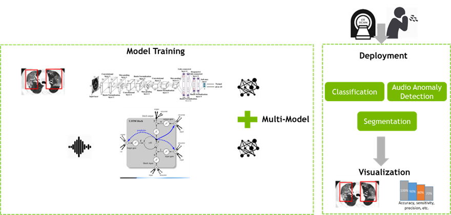
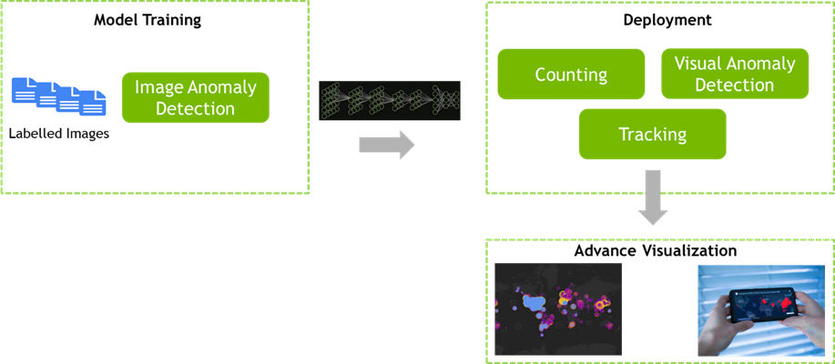

∙ Q1 : Medical Diagnosis challenge for Covid19
- Radiologists have watched the coronavirus disease 2019 (COVID-19) pandemic unfold. Radiology literature suggests a pivotal role for CT/X-RAY as CT/X-Ray findings in Covid-19 patient has pneumonia, and hence medical imaging has high sensitivity for diagnosis of COVID-19. The speech (audio) data can help in detecting a COVID-19 positive case after the application of ML techniques. Cough is one of the major symptoms of COVID-19.
While using individual models from one source of information (Image/Audio) is common but building DL pipeline to incorporate both images and audio at same time can result into improvement in accuracy and hence better diagnosis.
The objective of this challenge is to demonstrate usage of cross modality(Image and Audio ) for fast and accurate diagnosis of COVID-19. Deploying these models in connected devices to remotely diagnose people to reduce further transmission and containing the lethal transmission further during mass gathering in diagnostic & health care centers

Reference Dataset
ChestXray14 (112000 images of 14 diseased and normal CXR images)
https://nihcc.app.box.com/v/ChestXray-NIHCC
RSNA Pneumonia Detection Challenge’
https://www.kaggle.com/c/rsna-pneumonia-detection-challenge/data
Chest X-Ray Images Pneumonia
https://www.kaggle.com/paultimothymooney/chest-xray-pneumonia
COVID-19 Image
https://github.com/ieee8023/covid-chestxray-dataset
Audio Dataset
https://github.com/iiscleap/Coswara-Data
https://www.covid-19-sounds.org/en/
https://github.com/virufy/covid
Other
https://github.com/haydengunraj/COVIDNet-CT
https://github.com/ieee8023/covid-chestxray-dataset
These are links to sample dataset for reference purpose only. Participants are free to use these or other datasets after studying respective licenses
Prior Work/Reference
https://www.quantib.com/ blog/ diagnosing-covid-19-using -ai- basedmedical - image-analyses
https://pubs.rsna.org/ doi/10.1148/ radiol.2020200905
https://arxiv.org/ pdf/ 2003.09871.pdf
∙ Q2 : Health Surveillance Challenge for Public Service Area
- To enforce social distancing, it is important to monitor suspicious scenarios like crowd gathering or tracking etc. Usage of AI (Convolution Neural Network) has surpassed traditional Computer Vision techniques and can help automate this pattern recognition. The objective of this problem statement is to find different pattern on input sources like camera, satellite, social platforms which can help identify suspicious activities to stop or track covid-19 spread. Advance visualization with real time alert system should be incorporated into solution to necessary actions by authority to control the spread of virus.

Reference Dataset
Flu recognition Dataset
https://web.bii.a-star.edu.sg/~chengli/FluRecognition.htm
Mask Detection Dataset
https://www.kaggle.com/andrewmvd/face-mask-detection
Human Action dataset
https://www.csc.kth.se/cvap/actions/
Human tracking and surveillance
http://www.cvg.reading.ac.uk/PETS2016/a.html
Human Object Detection and Segmentation
https://storage.googleapis.com/openimages/web/download.html
Pascal-VOC, MS-COCO
These are links to sample dataset for reference purpose only. Participants are free to use these or other datasets after studying respective licenses
Prior Work/Reference
https://nanonets.com/blog/ crowd-counting-review/
https://www.analyticsvidhya.com/ blog/2019/02/ building-crowdcounting- model-python/
∙ Q3 : Other/Open House Challenge
Problem Statement
The participants may bring their own problem statement along with datasets and apply with solutions related to Healthcare only with the following priorities (but not limited to):
∙ To identify, track and forecast outbreaks.
∙ To develop the Drug Re-purposing Simulations leading to New Drug Discovery.
∙ To create Chat Bot with multiple regional languages supporting Conversational AI Techniques for Healthcare related activities.
∙ To develop AI based identification of non-complying or infected individuals.
∙ To create, Train and Deploy Robots to sterilize, Deliver Food and Supplies.
∙ To deploy Drones to monitor sites, announce policy measures and to deliver medical supplies in the infected regions/areas.
The participants are expected to make sure they comply with all the guidelines of the Hacakthon including not violating any license for the datasets and source code used while solving the problem statement.
Click here to APPLY